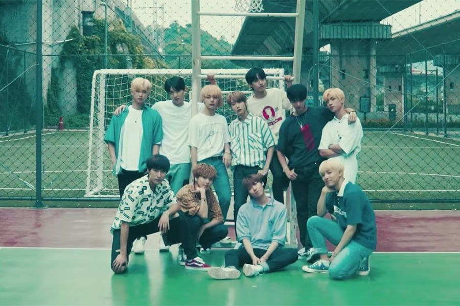

Przed debiutem w zespole Seoho (wtedy znany jako Gunmin), Keonhee oraz Hwanwoong wzięli udział w drugiej edycji programu Produce 101 Season 2 w 2017 roku. W drugiej połowie 2017 roku Ravn oraz Seoho wzięli udział jako stażyści RBW w survivalowym programie Mix Nine wyprodukowanym przez YG. Leedo także uczestniczył w programie lecz nie udało mu się przejść pierwszego przesłuchania.
Na początku 2018 roku Keonhee, Hwanwoong, Ravn, Seoho oraz Xion zostali przedstawieni jako przeddebiutowa grupa RBW Boyz, do której w marcu tego samego roku dołączył Leedo. W lipcu 2018 roku nazwa ich grupy została zmieniona na Oneus. 27 września Oneus, wraz z Onewe, wydali utwór „Last Song”.
